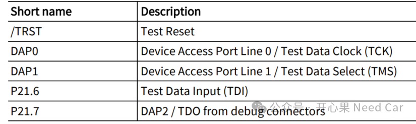
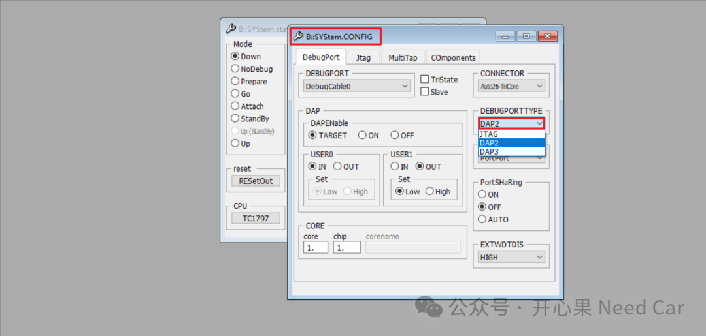
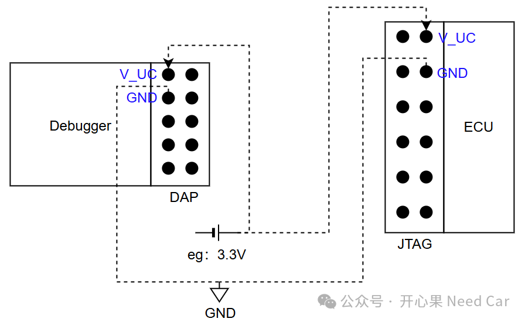

开发的小伙伴对于DAP（Debug Access Port）和JTAG（Joint Test Action Group）两种调试端口应该比较熟悉。调试端口无非就是为了方便程序调试，但是，项目做多了，不同项目中使用的调试端口可能会不同。比如，有的控制器预留了DAP端口，有的控制器却是JTAG端口。那么，有没有可能通过端口转换，让现有调试器的DAP端口通过控制器上的JTAG端口进行程序调试呢？答：可以。首先，我们需要清楚DAP和JTAG端口每个Pin脚的定义，下图左侧为DAP端口，右侧为JTAG端口，如下所示：
V_UC：Microcontroller Supply Voltage两者如何对应呢？DAP0接口TCK（Test Data Clock）,DAP1接TMS（Test Data Select），DAP2接TDO（Test Data Output），TRST（Test Reset）接TRST，PORST接PORST。英飞凌的芯片，如果大家使用MiniWigger烧录器下载和调试，DAP和JTAG两种调试端口均会支持，两者对应解释如下：

如果使用的调试器是Lauterbach调试器，调试端口类型选择配置如下：

2、DAP与JTAG互转注意事项
如果使用的Lauterbach只有DAP端口（10 Pin，间距1.27mm），转接到JTAG（14Pin，2.54mm），需要注意哪些事项呢？
1、供电，Lauterbach需要供电和接地，如果所用的控制器（简单的芯片母版）不能给V_UC Pin供电（eg：3.3V），则需要额外供电，额外供电示意如下：

点击下方关注，一起聊聊Autosar/嵌入式，如果需要，联系作者进群，给你更专业的解答